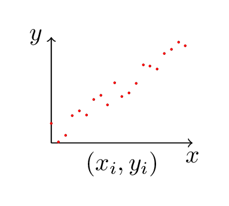
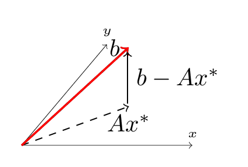

In statistics and function approximation, we often want to find a function (or group of functions) that models a system and matches a set of sampled data. Another goal may be to substitute a simpler function (typically a low order polynomial) for a complicated function (matching, if not everywhere, than hopefully at a set of particular data points).
The data, though, is usually a problem. Even when just trying to fit a simple line to a set of data points that should be linear, normal errors in measurement means there’s usually no line that exactly fits the points.
Consider a set of data points, \(\textbf{b}=\begin{pmatrix} b_1, ..., b_n \end{pmatrix}^T\), associated with an independent variable \(\textbf{x}=\begin{pmatrix} x_1, ..., x_n \end{pmatrix}^T\). Inspection of the data suggests that it was generated using a linear function of the form \(b = mx + c\). The linear function has two unknowns: \(m\) and \(c\).
Consider \(n=2\), the case with two data points. With two samples and two unknowns, we’re presented with a familiar system of equations:
\[m x_1 + c = b_1\]
\[m x_2 + c = b_2\]
or, in matrix form,
\[\begin{pmatrix} x_1 & 1 \\ x_2 & 1 \\ \end{pmatrix} \begin{pmatrix} m \\ c \end{pmatrix} = \begin{pmatrix} b_1 \\ b_2 \end{pmatrix}\]
For convenience we’ll label our matrix with \(A\). Solving for \(\textbf{x}\) is a equivalent to computing \(A^{-1}\textbf{b}\). Assuming \(A\) is invertible - equivalently, the matrix is full row rank and the rows are independent - this is possible.
Let’s say \(A\) is a \(n{\times}2\), with \(n<2\). The number of rows is greater than the number of columns, and \(A\) cannot be full row rank - every row cannot be independent. Said another way, given that two points define a line, a third point added will either not be on that line, thus leading to an inconsistent system, or it will be on the line, in which case it’s extraneous.
Thus if our measurements were perfectly accurate (and our function really is linear) then we can pick any two independent rows of \(A\) and \(\textbf{b}\) and recover \(m\) and \(c\). More likely, our values in \(\textbf{b}\) are not perfect, in which case different rows will solve for different results. There is probably no \(m\) and \(c\) which will fit every sample point.
If we can’t find an exact value for \(\begin{pmatrix} m \\ c \end{pmatrix}\), we can at least pick values for \(m\) and \(c\) that bring that line closest to the data points. To do that we’ll need a way of determining how close our current values are. Let \(\textbf{x} = \begin{pmatrix} m \\ c \end{pmatrix}\). Given a current estimate of \(x^*\) for \(x\), how good an estimate is it?
\[A\textbf{x}^* \approx \textbf{b}\]
To answer that question we need to be able to define and measure the error. Let \(\textbf{e}\) be the error vector associated with each variable (technically, the residual, since we’re measuring error in the ordinate not the abscissa). We can define the difference between our generated value and the expected value in terms of \(\textbf{e}\):
\[A\textbf{x}^* + \textbf{e} = \textbf{b} \implies \textbf{e} = \textbf{b} - A\textbf{x}^*\]
We can now use our definition for \(\textbf{e}\) to help find \(\textbf{x}^*\). But before doing that, what does it actually mean?

\(A\textbf{x}^{\star}\), necessarily, is a vector in the column space of \(A\). If \(\textbf{b}\) is in the column space of \(A\), then \(A\textbf{x}^{\star}=b\) and the problem is solved. Given \(\textbf{b}\) not in the column space, though we have \(\textbf{e} \ne 0\). Indeed, our definition of \(\textbf{e}\) suggets a method for its calculation: we factor \(\textbf{b}\) into the portion in the column space of \(A\) (\(A\textbf{x}^{\star}\)), and the orthogonal component which connects \(A\textbf{x}^{\star}\) to \(\textbf{b}\). That’s exactly what \(\textbf{e}\) does.
Geometrically, then, connecting \(A\textbf{x}^{\star}\) to \(\textbf{b}\) requires a vector orthogonal to column space of \(A\) - our \(\textbf{e}\). This geometry gives us the information we need to find a value for \(\textbf{e}\).
According to the Fundamental Theorem of Linear Algebra, the column space and left nullspace of a matrix are orthogonal. Therefore we know our \(\textbf{e}\) to be in the left nullspace of \(A\), that is, \(A^T \textbf{e} = 0\).
So \(A^T\textbf{e} = 0 \implies A^T (\textbf{b} - A\textbf{x}^*) = 0\), or
\[A^T\textbf{b} = A^T A\textbf{x}^*\]
This is the matrix form of the normal equations, which when solved give the least squares approximation. \(\textbf{x}^*\) can be computed directly by first calculating \((A^T A)^{-1}\) and then multiplying \(A^T\textbf{b}\). Provided the columns of \(A\) are independent the inverse is guaranteed to exist. Although of course it’s possible and preferable to solve without calculating the inverse (as John D. Cook says, don’t invert that matrix);
This doesn’t explain the name “Least Squares” though. Where does that come from?
The optimal solution \(x^*\) minimizes the magnitude of \(\textbf{e}\), that is, \(|A\textbf{x}^* - \textbf{b}|\). Equivalently we can solve the square, which is simpler, \(|A\textbf{x}^* - \textbf{b}|^2\). Separating by terms leaves us minimizing \(\sum_{i=1}^{n} (a_i^T x_i - b_i)^2\) where \(a_i^T\) is the \(i^{th}\) row vector in \(A\). It’s from this formulation - finding the least sum of the squares of the error - that the method gets its name.
If you’re familiar with matrix calculus you can take the partial derivative of \(|A\textbf{x} - \textbf{b}|^2\), or equivalently \((A\textbf{x} - \textbf{b})^T(A\textbf{x} - \textbf{b})\), to derive the Normal Equations.